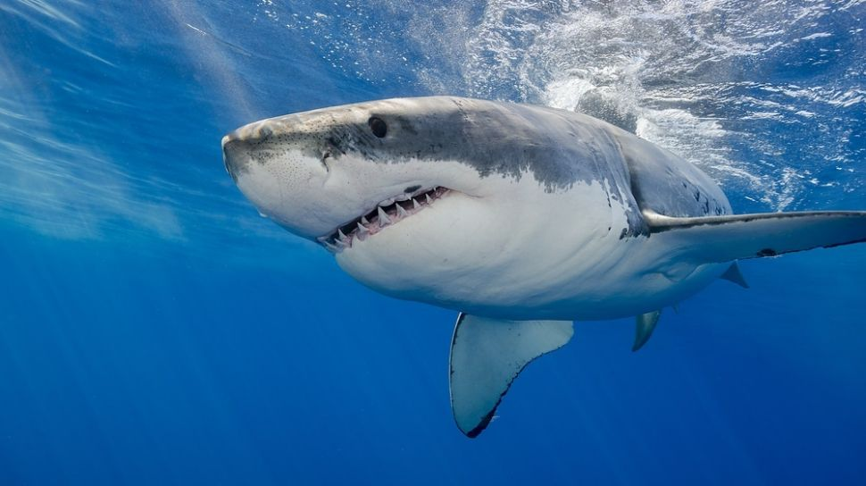
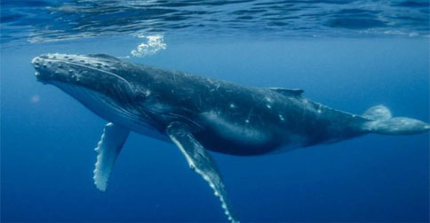
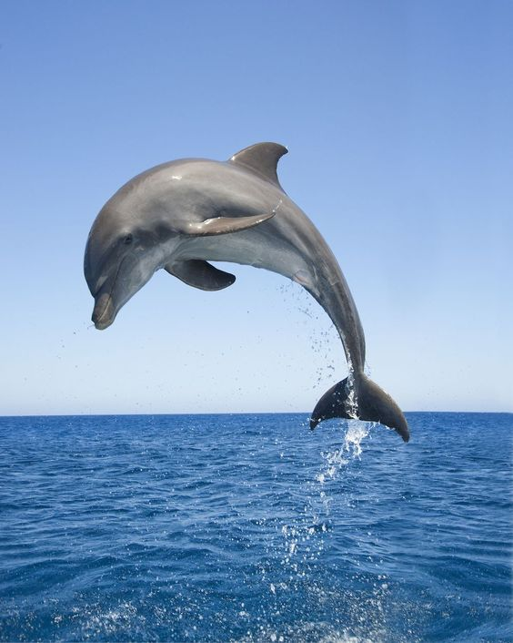
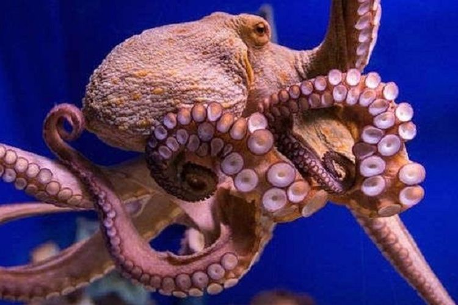
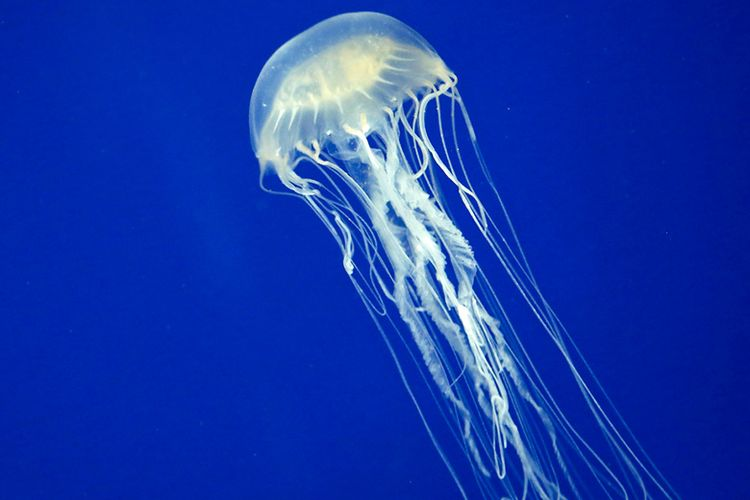
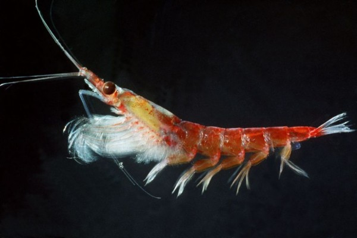

<!DOCTYPE html>
<html style="font-size: 16px;">
  <head>
    <meta name="viewport" content="width=device-width, initial-scale=1.0">
    <meta charset="utf-8">
    <meta name="keywords" content="AWC">
    <meta name="description" content="">
    <meta name="page_type" content="np-template-header-footer-from-plugin">
    <title>HEWAN LAUT</title>
    <link rel="stylesheet" href="nicepage.css" media="screen">
<link rel="stylesheet" href="HEWAN-LAUT.css" media="screen">
    <script class="u-script" type="text/javascript" src="jquery.js" defer=""></script>
    <script class="u-script" type="text/javascript" src="nicepage.js" defer=""></script>
    <meta name="generator" content="Nicepage 3.25.0, nicepage.com">
    <link id="u-theme-google-font" rel="stylesheet" href="https://fonts.googleapis.com/css?family=Roboto:100,100i,300,300i,400,400i,500,500i,700,700i,900,900i|Open+Sans:300,300i,400,400i,600,600i,700,700i,800,800i">
    
    
    <script type="application/ld+json">{
		"@context": "http://schema.org",
		"@type": "Organization",
		"name": ""
}</script>
    <meta name="theme-color" content="#478ac9">
    <meta property="og:title" content="HEWAN LAUT">
    <meta property="og:type" content="website">
  </head>
  <body class="u-body"><header class="u-clearfix u-header u-palette-4-light-1 u-sticky u-sticky-d224 u-header" id="sec-3f3b"><div class="u-clearfix u-sheet u-sheet-1">
        <nav class="u-menu u-menu-dropdown u-offcanvas u-menu-1" data-position="Home">
          <div class="menu-collapse" style="font-size: 1rem; letter-spacing: 0px; font-weight: 700;">
            <a class="u-button-style u-custom-active-border-color u-custom-active-color u-custom-border u-custom-border-color u-custom-borders u-custom-hover-border-color u-custom-hover-color u-custom-left-right-menu-spacing u-custom-padding-bottom u-custom-text-active-color u-custom-text-color u-custom-text-hover-color u-custom-top-bottom-menu-spacing u-nav-link u-text-active-palette-1-base u-text-hover-palette-2-base" href="#">
              <svg><use xmlns:xlink="http://www.w3.org/1999/xlink" xlink:href="#menu-hamburger"></use></svg>
              <svg version="1.1" xmlns="http://www.w3.org/2000/svg" xmlns:xlink="http://www.w3.org/1999/xlink"><defs><symbol id="menu-hamburger" viewBox="0 0 16 16" style="width: 16px; height: 16px;"><rect y="1" width="16" height="2"></rect><rect y="7" width="16" height="2"></rect><rect y="13" width="16" height="2"></rect>
</symbol>
</defs></svg>
            </a>
          </div>
          <div class="u-custom-menu u-nav-container">
            <ul class="u-nav u-spacing-20 u-unstyled u-nav-1"><li class="u-nav-item"><a class="u-border-active-palette-1-base u-border-hover-palette-1-base u-button-style u-nav-link u-text-active-palette-1-base u-text-grey-90 u-text-hover-palette-2-base" href="Page-1.html" style="padding: 10px;">Home</a><div class="u-nav-popup"><ul class="u-h-spacing-20 u-nav u-unstyled u-v-spacing-10 u-nav-2"><li class="u-nav-item"><a class="u-button-style u-nav-link u-white" href="Home.html">Home</a>
</li></ul>
</div>
</li><li class="u-nav-item"><a class="u-border-active-palette-1-base u-border-hover-palette-1-base u-button-style u-nav-link u-text-active-palette-1-base u-text-grey-90 u-text-hover-palette-2-base" style="padding: 10px;">About</a><div class="u-nav-popup"><ul class="u-h-spacing-20 u-nav u-unstyled u-v-spacing-10 u-nav-3"><li class="u-nav-item"><a class="u-button-style u-nav-link u-white" href="HEWAN-DARAT.html">HEWAN DARAT</a>
</li><li class="u-nav-item"><a class="u-button-style u-nav-link u-white" href="HEWAN-LAUT.html">HEWAN LAUT</a>
</li><li class="u-nav-item"><a class="u-button-style u-nav-link u-white" href="HEWAN-UDARA.html">HEWAN UDARA</a>
</li></ul>
</div>
</li></ul>
          </div>
          <div class="u-custom-menu u-nav-container-collapse">
            <div class="u-black u-container-style u-inner-container-layout u-opacity u-opacity-95 u-sidenav">
              <div class="u-sidenav-overflow">
                <div class="u-menu-close"></div>
                <ul class="u-align-center u-nav u-popupmenu-items u-unstyled u-nav-4"><li class="u-nav-item"><a class="u-button-style u-nav-link" href="Page-1.html" style="padding: 10px;">Home</a><div class="u-nav-popup"><ul class="u-h-spacing-20 u-nav u-unstyled u-v-spacing-10 u-nav-5"><li class="u-nav-item"><a class="u-button-style u-nav-link" href="Home.html">Home</a>
</li></ul>
</div>
</li><li class="u-nav-item"><a class="u-button-style u-nav-link" style="padding: 10px;">About</a><div class="u-nav-popup"><ul class="u-h-spacing-20 u-nav u-unstyled u-v-spacing-10 u-nav-6"><li class="u-nav-item"><a class="u-button-style u-nav-link" href="HEWAN-DARAT.html">HEWAN DARAT</a>
</li><li class="u-nav-item"><a class="u-button-style u-nav-link" href="HEWAN-LAUT.html">HEWAN LAUT</a>
</li><li class="u-nav-item"><a class="u-button-style u-nav-link" href="HEWAN-UDARA.html">HEWAN UDARA</a>
</li></ul>
</div>
</li></ul>
              </div>
            </div>
            <div class="u-black u-menu-overlay u-opacity u-opacity-70"></div>
          </div>
        </nav>
        <h4 class="u-text u-text-default u-text-1">
          <span style="font-weight: 700;">AW <span style="font-weight: 400;">
              <span style="font-weight: 700;"></span>
            </span>
          </span>
          <span style="font-weight: 700;">C</span>
        </h4><span class="u-icon u-icon-circle u-text-white u-icon-1"><svg class="u-svg-link" preserveAspectRatio="xMidYMin slice" viewBox="0 0 512 512" style=""><use xmlns:xlink="http://www.w3.org/1999/xlink" xlink:href="#svg-1d3e"></use></svg><svg class="u-svg-content" viewBox="0 0 512 512" id="svg-1d3e"><g><path d="m377 0h-242c-74.439 0-135 60.561-135 135v242c0 74.439 60.561 135 135 135h242c74.439 0 135-60.561 135-135v-242c0-74.439-60.561-135-135-135zm105 377c0 57.897-47.103 105-105 105h-242c-57.897 0-105-47.103-105-105v-242c0-57.897 47.103-105 105-105h242c57.897 0 105 47.103 105 105z"></path>
</g></svg></span>
      </div></header>
    <section class="u-clearfix u-section-1" id="sec-e316">
      <div class="u-clearfix u-sheet u-sheet-1">
        <p class="u-text u-text-1">
          <span style="font-weight: 700;">Hewan laut</span> adalah hewan yang beradaptasi dengan kehidupan di dalam laut, di permukaannya atau di tepiannya.<br>Dan beberapa contoh hewan-hewan yang hidup dilaut/diair.<br>
          <br>1.Hiu<br>
          <br>
          <br>
          <br>
          <br>
          <br>
          <br>
          <br>
          <br>&nbsp; &nbsp;Ikan Hiu adalah sekelompok
(superordo Selachimorpha) ikan dengan kerangka tulang rawan yang lengkap dan
tubuh&nbsp; &nbsp; &nbsp; &nbsp; &nbsp;yang ramping. Mereka bernapas dengan menggunakan lima liang insang
(kadang-kadang enam atau tujuh, tergantung&nbsp; &nbsp; &nbsp; &nbsp;pada spesiesnya) di samping, atau
dimulai sedikit di belakang, kepalanya. Hiu mempunyai tubuh yang dilapisi kulit&nbsp; &nbsp; &nbsp; &nbsp; &nbsp; &nbsp; &nbsp; &nbsp;dermal denticles untuk melindungi kulit mereka dari kerusakan, dari parasit,
dan untuk menambah dinamika air.&nbsp; &nbsp; &nbsp; &nbsp; &nbsp; &nbsp; &nbsp; &nbsp; &nbsp;Mereka mempunyai beberapa deret gigi yang
dapat digantikan.&nbsp; &nbsp;<br>
          <br>&nbsp; &nbsp;Hiu mencakup spesies yang berukuran sebesar telapak tangan.
Hiu pigmi, 
Euprotomicrus bispinatus, sebuah spesies&nbsp; &nbsp; &nbsp; &nbsp; &nbsp; &nbsp;dari laut dalam yang panjangnya hanya 22 cm, hingga hiu paus, Rhincodon typus,
ikan terbesar yang mampu tumbuh&nbsp; &nbsp; &nbsp; &nbsp; &nbsp;hingga sekitar 12 meter dan yang, seperti paus,
hanya memakan plankton melalui alat penyaring di mulutnya. Hiu&nbsp; &nbsp; &nbsp; &nbsp; &nbsp; &nbsp; &nbsp; &nbsp;banteng,
Carcharhinus leucas, adalah yang paling terkenal dari beberapa spesies yang
berenang di air laut maupun air&nbsp; &nbsp; &nbsp; &nbsp;tawar (jenis ini ditemukan di Danau Nikaragua,
di Amerika Tengah) dan di delta-delta.&nbsp;<br>
          <br>2.Paus<br>
          <br>
          <br>
          <br>
          <br>
          <br>
          <br>
          <br>
          <br>
          <br>&nbsp; &nbsp;Paus atau lodan atau Papaw
(khusus yang bergigi dan bukan berukuran kecil) adalah kelompok mamalia yang
hidup di&nbsp; &nbsp; &nbsp; &nbsp;lautan. Ikan ini sangat besar. Paus bukan tergolong dalam keluarga
ikan. Paus mempunyai ciri-ciri sebagai berikut:&nbsp;<br>&nbsp; &nbsp; &nbsp; -bernapas menggunakan paru-paru&nbsp;<br>&nbsp; &nbsp; &nbsp; -mempunyai rambut (sedikit, kebanyakan ada di paus dewasa)&nbsp;<br>&nbsp; &nbsp; &nbsp; -berdarah panas&nbsp;<br>&nbsp; &nbsp; &nbsp; -mempunyai kelenjar susu&nbsp;<br>&nbsp; &nbsp; &nbsp; -mempunyai jantung dengan empat ruang&nbsp;<br>&nbsp; &nbsp;Paus purba berevolusi pada
pertengahan tempo Eocene, kira-kira 50 juta tahun yang lalu. Salah satu paus
terawal yang&nbsp; &nbsp; &nbsp; &nbsp;telah punah adalah Basilosaurus yang mempunyai kepala kecil bermoncong
menonjol dan bergigi. Basilosaurus&nbsp; &nbsp; &nbsp; &nbsp; &nbsp; &nbsp; &nbsp; &nbsp; &nbsp; &nbsp;mempunyai panjang 25 meter.<br>&nbsp;&nbsp;<br>&nbsp; &nbsp;Fosil menunjukkan bahwa paus
berasal dari hewan daratan berkuku, kemungkinan dari hewan seperti Mesonychid&nbsp; &nbsp; &nbsp; &nbsp; &nbsp; &nbsp; &nbsp;(hewan seperti serigala yang tinggal di pesisir pantai) yang berangsur-angsur kembali
menghunii lautan sekitar 50 juta&nbsp; &nbsp; &nbsp; &nbsp; &nbsp;tahun yang lalu. Satu lagi kemungkinan hewan
lain yang berubah menjadi paus, adalah Ambulocetus, mamalia&nbsp; &nbsp; &nbsp; &nbsp; &nbsp; &nbsp; &nbsp; &nbsp; &nbsp; &nbsp; &nbsp;seukuran anjing
laut namun memiliki panjang 3 meter seberat 325 kilogram.<br>
          <br>&nbsp; &nbsp;Pada masa kini dikenal dua
kelompok paus, yaitu paus bergigi (Odontoceti) dan paus tidak bergigi
(Mysticeti). Paus&nbsp; &nbsp; &nbsp; &nbsp; &nbsp; &nbsp; &nbsp; &nbsp;Odontoceti yang bergigi merupakan pemangsa yang memakan ikan,
sotong, dan mamalia laut, mempunyai satu lubang&nbsp; &nbsp; &nbsp;pernapasan. Paus bergigi berkerabat
dekat dengan lumba-lumba dan pesut. Paus tidak bergigi berukuran lebih besar&nbsp; &nbsp; &nbsp; &nbsp; &nbsp;daripada paus bergigi dan mempunyai struktur yang dikenal sebagai balin yang
berbentuk sikat. Struktur ini berguna&nbsp; &nbsp; &nbsp; &nbsp; &nbsp; &nbsp;untuk menyaring plankton, makanannya, di
air. Paus berbalin mempunyai dua lubang pernapasan.<br>
          <br>3.Lumba-Lumba<br>
          <br>
          <br>
          <br>
          <br>
          <br>
          <br>
          <br>
          <br>
          <br>&nbsp; &nbsp;Lumba-lumba adalah mamalia laut
yang sangat cerdas, selain itu sistem alamiah yang melengkapi tubuhnya sangat&nbsp; &nbsp; &nbsp; &nbsp; &nbsp; &nbsp; &nbsp;kompleks. Sehingga banyak teknologi yang terinspirasi dari lumba-lumba. Salah
satu contoh adalah kulit lumba-lumba&nbsp; &nbsp; &nbsp; &nbsp;yang mampu memperkecil gesekan dengan air,
sehingga lumba-lumba dapat berenang dengan sedikit hambatan air.&nbsp; &nbsp; &nbsp; &nbsp; &nbsp;Hal ini yang
digunakan para perenang untuk merancang baju renang yang mirip kulit
lumba-lumba.&nbsp;<br>
          <br>&nbsp; &nbsp;Lumba-lumba memiliki sebuah sistem yang digunakan untuk berkomunikasi dan 
menerima rangsang yang dinamakan&nbsp; &nbsp; &nbsp; &nbsp;sistem sonar, sistem ini dapat menghindari 
benda-benda yang ada di depan lumba-lumba, sehingga terhindar dari&nbsp; &nbsp; &nbsp; &nbsp; &nbsp; &nbsp; &nbsp; &nbsp;benturan. 
Teknologi ini kemudian diterapkan dalam pembuatan radar kapal selam. Lumbalumba adalah binatang&nbsp; &nbsp; &nbsp; &nbsp; &nbsp; &nbsp; &nbsp;menyusui karena lumba lumba adalah mamalia. Mereka 
hidup di laut dan sungai di seluruh dunia. Lumba-lumba adalah&nbsp; &nbsp; &nbsp;kerabat paus dan 
pesut. Ada lebih dari 40 jenis lumba-lumba.&nbsp;<br>
          <br>&nbsp; &nbsp;Bayi lumba-lumba yang baru lahir akan dibawa ke permukaan oleh induknya agar 
bisa menghirup udara. Lumba-lumba&nbsp; &nbsp; &nbsp;perlu naik ke permukaan untuk bernapas 
supaya tetap hidup. Lumba-lumba bernapas melalui lubang udara yang&nbsp; &nbsp; &nbsp; &nbsp; &nbsp; &nbsp; &nbsp; &nbsp; &nbsp;terletak di 
atas kepalnya. Tubuhnya yang licin dan ramping sangat sesuai untuk berenang. 
Induk lumba-lumba&nbsp; &nbsp; &nbsp; &nbsp; &nbsp; &nbsp; &nbsp; &nbsp; &nbsp; &nbsp; &nbsp; &nbsp;menyusui anaknya dengan susu yang gurih dan menyediakan 
energi bagi anaknya supaya cepat besar. Setiap anak&nbsp; &nbsp; &nbsp; &nbsp; &nbsp; &nbsp; &nbsp;lumba-lumba selalu berada di 
dekat induknya, sehingga ibunya bisa melindungi dari bahaya. Lumba-lumba 
selalu&nbsp; &nbsp; &nbsp; &nbsp; &nbsp; &nbsp; &nbsp; &nbsp; &nbsp;menjaga hubungan dengan anaknya hingga tumbuh semakin besar. Induk 
lumba-lumba memanggil anak anaknya&nbsp; &nbsp; &nbsp; &nbsp; &nbsp; &nbsp; &nbsp; &nbsp;dengan siulan khusus yang bisa mereka 
kenali.<br>
          <br>&nbsp; &nbsp;Lumba-lumba hidup dan bekerja dalam kelompok atau disebut kawanan. Mereka 
sering bermain bersama. Seekor&nbsp; &nbsp; &nbsp; &nbsp; &nbsp; &nbsp; &nbsp; &nbsp;lumba-lumba tidak bisa tidur nyenyak di bawah 
air. Ia bisa tenggelam. Oleh karena itu, ia setengah tidur beberapa saat&nbsp; &nbsp; &nbsp; &nbsp;dalam 
sehari. Lumba-lumba makan cumi dan ikan seperti ikan mullet abu-abu. Kadang 
kadang Lumba-lumba&nbsp; &nbsp; &nbsp; &nbsp; &nbsp; &nbsp; &nbsp; &nbsp; &nbsp; &nbsp; &nbsp; &nbsp;menggiring kawanan ikan agar mudah ditangkap. Lumbalumba mencari jalan dengan mengirimkan suara di dalam air.&nbsp; &nbsp; &nbsp;Jika suara itu 
mengenai suatu benda, suara itu akan dipantulkan kembali sebagai gema. Kadang 
kadang, suara gaduh di&nbsp; &nbsp; &nbsp;laut akibat pengeboran minyak dapat membingungkan 
lumba-lumba. Mereka akan mengalami kesulitan dalam&nbsp; &nbsp; &nbsp; &nbsp; &nbsp; &nbsp; &nbsp; &nbsp; &nbsp; &nbsp; &nbsp;mengirim dan menerima 
pesan. Karena lumba-lumba dapat berkomunikasi, maka lumba-lumba disebut 
sebagai hewan&nbsp; &nbsp; &nbsp;yang paling cerdas, melebihi simpanse.<br>
          <br>&nbsp; &nbsp;Manusia senantiasa tertarik dengan kisah lumba-lumba. Bangsa Romawi telah 
membuat gambar mozaik lumba-lumba&nbsp; &nbsp; &nbsp; &nbsp;sekitar 2.000 tahun lalu. Sekarang, 
manusia senang berenang di laut bersama binatang yang pandai dan bersahabat&nbsp; &nbsp; &nbsp; &nbsp; &nbsp; &nbsp;seperti lumba-lumba. Lumba-lumba harus berhati hati terhadap ikan hiu yang 
mungkin menyerang mereka sewaktu&nbsp; &nbsp; &nbsp; &nbsp; &nbsp; &nbsp;waktu. Mereka melindungi diri dengan gigi 
giginya, kadang-kadang mereka menggunakan paruhnya sebagai pelantak.&nbsp; &nbsp; &nbsp; &nbsp; &nbsp;Manusia dapat menjala banyak sekali ikan bagi lumba-lumba untuk makanannya. 
Terkadang, lumba-lumba tertangkap&nbsp; &nbsp; &nbsp; &nbsp;oleh jaring nelayan. Mereka tidak dapat 
menghirup napas di permukaan, akibatnya mereka tenggelam. Ketika bahan&nbsp; &nbsp; &nbsp; &nbsp; &nbsp; &nbsp;kimia 
yang berbahaya dibuang ke laut, limbah itu bisa meracuni makanan yang dimakan 
lumba-lumba. Pembangunan&nbsp; &nbsp; &nbsp; &nbsp; &nbsp;waduk di sungai dan pengeringan danau hanya 
menyisakan sedikit tempat bagi binatang seperti lumba-lumba Brazil&nbsp; &nbsp; &nbsp; &nbsp; &nbsp; &nbsp;untuk hidup.&nbsp;<br>&nbsp;<br>&nbsp; &nbsp;Lumba-lumba tergolong sebagai mamalia yang cerdas. Lumba-lumba dapat 
menolong manusia, bila lumba-lumba&nbsp; &nbsp; &nbsp; &nbsp; &nbsp; &nbsp; &nbsp; &nbsp;sudah terlatih, bahkan lingkaran api pun 
dapat mereka terobos. Singa laut, spesies primata, paus dan anjing juga&nbsp; &nbsp; &nbsp; &nbsp; &nbsp; &nbsp; &nbsp; &nbsp; &nbsp;termasuk 
binatang yang cerdas. Lumba-lumba yang sudah terlatih dapat melakukan berbagai 
atraksi dan mereka juga&nbsp; &nbsp; &nbsp; &nbsp;dapat berhitung, tetapi Lumba-lumba liar belum dapat 
melakukan berbagai atraksi. Sekarang ini, lumba-lumba dan&nbsp; &nbsp; &nbsp; &nbsp; &nbsp; &nbsp; &nbsp;paus&nbsp; &nbsp;sudah langka, 
maka lumba-lumba dan paus harus dilindungi. Lumba-lumba dan paus telah mulai 
dilindungi di&nbsp; &nbsp; &nbsp; &nbsp; &nbsp; &nbsp;seluruh dunia.&nbsp; &nbsp; &nbsp; &nbsp; &nbsp;&nbsp;<br>
          <br>4.Gurita<br>
          <br>
          <br>
          <br>
          <br>
          <br>
          <br>
          <br>
          <br>
          <br>&nbsp; &nbsp;Gurita adalah hewan moluska dari kelas Cephalopoda (kaki hewan terletak di 
kepala), ordo Octopoda dengan terumbu&nbsp; &nbsp; &nbsp; &nbsp;karang di samudra sebagai habitat utama. 
Gurita terdiri dari 289 spesies yang mencakup sepertiga dari total spesies&nbsp; &nbsp; &nbsp; &nbsp; &nbsp; &nbsp;kelas 
Cephalopoda. Gurita dalam bahasa Inggris disebut Octopus (Yunani: Ὀκτάπους, 
delapan kaki) yang sering hanya&nbsp; &nbsp; &nbsp; &nbsp; &nbsp;mengacu pada hewan dari genus Octopus.<br>
          <br>5.Ubur-Ubur<br>
          <br>
          <br>
          <br>
          <br>
          <br>
          <br>
          <br>
          <br>
          <br>
          <br>&nbsp; &nbsp;Ubur-ubur adalah sejenis binatang laut tak bertulang belakang yang termasuk 
dalam filum Cnidaria, ubur-ubur yang&nbsp; &nbsp; &nbsp; &nbsp; &nbsp; &nbsp;dimaksud di sini adalah hewan dari kelas 
Schypozoa, sehingga sering disebut ubur-ubur sejati agar tidak dibingungkan&nbsp; &nbsp; &nbsp; &nbsp;dengan hewan lain yang juga disebut ubur-ubur seperti: Ctenophora (ubur-ubur 
sisir) dan Cubozoa (ubur-ubur kotak).&nbsp; &nbsp; &nbsp; &nbsp; &nbsp;Sebagai anggota Cnidaria, mereka memiliki 
dua bentuk tubuh yaitu polip yang menempel di dasar laut dan medusa&nbsp; &nbsp; &nbsp; &nbsp; &nbsp; &nbsp; &nbsp;yang&nbsp; &nbsp; dapat 
berenang bebas dan berbentuk cangkir terbalik.<br>
          <br>&nbsp; &nbsp;Ciri-ciri<br>
          <br>&nbsp; &nbsp;Struktur medusa dan polip : Abu-abu adalah mesoglea yang dikelilingi warna 
merah (eksoderm) dan biru (gastroderm),&nbsp; &nbsp; &nbsp; &nbsp;bagian dalam adalah rongga tubuh yang 
terhubung dengan mulut/anus<br>
          <br>&nbsp; &nbsp;Umumnya mereka berukuran 2 sampai 40 cm, tapi ubur-ubur yang lebih besar bisa 
mencapai 1-2 meter, misalnya&nbsp; &nbsp; &nbsp; &nbsp; &nbsp; &nbsp; &nbsp; &nbsp;spesies terbesarnya Cyanea capillata atau lebih 
dikenal dengan Surai singa. Schypozoa dapat ditemukan di lautan&nbsp; &nbsp; &nbsp; &nbsp; &nbsp; &nbsp; &nbsp; &nbsp; &nbsp;seluruh dunia,
dari permukaan sampai laut dalam. Schypozoa tidak ditemukan di air tawar. 
Schypozoa memakan&nbsp; &nbsp; &nbsp; &nbsp; &nbsp; &nbsp; &nbsp; &nbsp; &nbsp;beragam makanan seperti Krustasea atau Ikan yang mereka 
buru menggunakan organel nematosista yang terdapat di&nbsp; &nbsp; &nbsp; &nbsp;tentakelnya. Nematosista
sendiri adalah ciri khas filum Cnidaria, berupa sel berbentuk jarum yang berfungsi&nbsp;menusuk&nbsp; &nbsp; &nbsp; &nbsp; &nbsp;dan menyuntikkan racun ke mangsanya.&nbsp;<br>
          <br>6.Udang<br>
          <br>
          <br>
          <br>
          <br>
          <br>
          <br>
          <br>
          <br>
          <br>
          <br>
          <br>&nbsp; &nbsp;Udang adalah binatang yang hidup di perairan, khususnya sungai, laut, atau danau. 
Udang dapat ditemukan di hampir&nbsp; &nbsp; &nbsp; &nbsp;semua "genangan" air yang berukuran besar 
baik air tawar, air payau, maupun air asin pada kedalaman bervariasi, dari&nbsp; &nbsp; &nbsp;dekat 
permukaan hingga beberapa ribu meter di bawah permukaan.&nbsp;<br>
          <br>&nbsp; &nbsp;Banyak crustaceae yang dikenal dengan nama "udang". Misalnya mantis shrimp 
dan mysid shrimp, keduanya&nbsp; &nbsp; &nbsp; &nbsp; &nbsp; &nbsp; &nbsp; &nbsp; &nbsp; &nbsp; &nbsp; &nbsp; &nbsp;berasal dari kelas Malacostraca sebagai udang sejati, tetapi berasal dari ordo berbeda, yaitu Stomatopoda dan&nbsp; &nbsp; &nbsp; &nbsp; &nbsp; &nbsp; &nbsp; &nbsp; &nbsp; &nbsp; &nbsp;Mysidaceae. Triops 
longicaudatus dan Triops cancriformis juga merupakan hewan populer di air tawar, 
dan sering&nbsp; &nbsp; &nbsp; &nbsp; &nbsp; &nbsp; &nbsp; &nbsp;disebut udang, walaupun mereka berasal dari Notostraca, kelompok yang tidak berhubungan.
        </p>
        
        
        
        
        
        
      </div>
    </section>
    
    
    <footer class="u-clearfix u-footer u-palette-4-light-1" id="sec-ffe4" data-animation-name="" data-animation-duration="0" data-animation-delay="0" data-animation-direction=""><div class="u-clearfix u-sheet u-sheet-1">
        <h1 class="u-text u-title u-text-1">AWC</h1><span class="u-icon u-icon-circle u-text-white u-icon-1"><svg class="u-svg-link" preserveAspectRatio="xMidYMin slice" viewBox="0 0 512 512" style=""><use xmlns:xlink="http://www.w3.org/1999/xlink" xlink:href="#svg-6725"></use></svg><svg class="u-svg-content" viewBox="0 0 512 512" id="svg-6725"><g><path d="m377 0h-242c-74.439 0-135 60.561-135 135v242c0 74.439 60.561 135 135 135h242c74.439 0 135-60.561 135-135v-242c0-74.439-60.561-135-135-135zm105 377c0 57.897-47.103 105-105 105h-242c-57.897 0-105-47.103-105-105v-242c0-57.897 47.103-105 105-105h242c57.897 0 105 47.103 105 105z"></path>
</g></svg></span>
        <nav class="u-menu u-menu-dropdown u-offcanvas u-menu-1" data-position="Home">
          <div class="menu-collapse" style="font-size: 1rem; letter-spacing: 0px; font-weight: 700;">
            <a class="u-button-style u-custom-active-border-color u-custom-active-color u-custom-border u-custom-border-color u-custom-borders u-custom-hover-border-color u-custom-hover-color u-custom-left-right-menu-spacing u-custom-padding-bottom u-custom-text-active-color u-custom-text-color u-custom-text-hover-color u-custom-top-bottom-menu-spacing u-nav-link u-text-active-palette-1-base u-text-hover-palette-2-base" href="#">
              <svg><use xmlns:xlink="http://www.w3.org/1999/xlink" xlink:href="#menu-hamburger"></use></svg>
              <svg version="1.1" xmlns="http://www.w3.org/2000/svg" xmlns:xlink="http://www.w3.org/1999/xlink"><defs><symbol id="menu-hamburger" viewBox="0 0 16 16" style="width: 16px; height: 16px;"><rect y="1" width="16" height="2"></rect><rect y="7" width="16" height="2"></rect><rect y="13" width="16" height="2"></rect>
</symbol>
</defs></svg>
            </a>
          </div>
          <div class="u-custom-menu u-nav-container">
            <ul class="u-nav u-spacing-20 u-unstyled u-nav-1"><li class="u-nav-item"><a class="u-border-active-palette-1-base u-border-hover-palette-1-base u-button-style u-nav-link u-text-active-palette-1-base u-text-grey-90 u-text-hover-palette-2-base" href="Page-1.html" style="padding: 10px;">Home</a><div class="u-nav-popup"><ul class="u-h-spacing-20 u-nav u-unstyled u-v-spacing-10 u-nav-2"><li class="u-nav-item"><a class="u-button-style u-nav-link u-white" href="Home.html">Home</a>
</li></ul>
</div>
</li><li class="u-nav-item"><a class="u-border-active-palette-1-base u-border-hover-palette-1-base u-button-style u-nav-link u-text-active-palette-1-base u-text-grey-90 u-text-hover-palette-2-base" style="padding: 10px;">About</a><div class="u-nav-popup"><ul class="u-h-spacing-20 u-nav u-unstyled u-v-spacing-10 u-nav-3"><li class="u-nav-item"><a class="u-button-style u-nav-link u-white" href="HEWAN-DARAT.html">HEWAN DARAT</a>
</li><li class="u-nav-item"><a class="u-button-style u-nav-link u-white" href="HEWAN-LAUT.html">HEWAN LAUT</a>
</li><li class="u-nav-item"><a class="u-button-style u-nav-link u-white" href="HEWAN-UDARA.html">HEWAN UDARA</a>
</li></ul>
</div>
</li></ul>
          </div>
          <div class="u-custom-menu u-nav-container-collapse">
            <div class="u-black u-container-style u-inner-container-layout u-opacity u-opacity-95 u-sidenav">
              <div class="u-sidenav-overflow">
                <div class="u-menu-close"></div>
                <ul class="u-align-center u-nav u-popupmenu-items u-unstyled u-nav-4"><li class="u-nav-item"><a class="u-button-style u-nav-link" href="Page-1.html" style="padding: 10px;">Home</a><div class="u-nav-popup"><ul class="u-h-spacing-20 u-nav u-unstyled u-v-spacing-10 u-nav-5"><li class="u-nav-item"><a class="u-button-style u-nav-link" href="Home.html">Home</a>
</li></ul>
</div>
</li><li class="u-nav-item"><a class="u-button-style u-nav-link" style="padding: 10px;">About</a><div class="u-nav-popup"><ul class="u-h-spacing-20 u-nav u-unstyled u-v-spacing-10 u-nav-6"><li class="u-nav-item"><a class="u-button-style u-nav-link" href="HEWAN-DARAT.html">HEWAN DARAT</a>
</li><li class="u-nav-item"><a class="u-button-style u-nav-link" href="HEWAN-LAUT.html">HEWAN LAUT</a>
</li><li class="u-nav-item"><a class="u-button-style u-nav-link" href="HEWAN-UDARA.html">HEWAN UDARA</a>
</li></ul>
</div>
</li></ul>
              </div>
            </div>
            <div class="u-black u-menu-overlay u-opacity u-opacity-70"></div>
          </div>
        </nav>
      </div></footer>
    <section class="u-backlink u-clearfix u-grey-80">
      <a class="u-link" href="https://nicepage.com/website-templates" target="_blank">
        <span>Website Templates</span>
      </a>
      <p class="u-text">
        <span>created with</span>
      </p>
      <a class="u-link" href="https://nicepage.com/" target="_blank">
        <span>Website Builder Software</span>
      </a>. 
    </section><span style="height: 64px; width: 64px; margin-left: 0px; margin-right: auto; margin-top: 0px; background-image: none; right: 45px; bottom: 15px;" class="u-back-to-top u-icon u-icon-circle u-opacity u-opacity-75 u-palette-5-dark-2 u-spacing-17" data-href="#">
        <svg class="u-svg-link" preserveAspectRatio="xMidYMin slice" viewBox="0 0 551.13 551.13"><use xmlns:xlink="http://www.w3.org/1999/xlink" xlink:href="#svg-1d98"></use></svg>
        <svg class="u-svg-content" enable-background="new 0 0 551.13 551.13" viewBox="0 0 551.13 551.13" xmlns="http://www.w3.org/2000/svg" id="svg-1d98"><path d="m275.565 189.451 223.897 223.897h51.668l-275.565-275.565-275.565 275.565h51.668z"></path></svg>
    </span>
  </body>
</html>